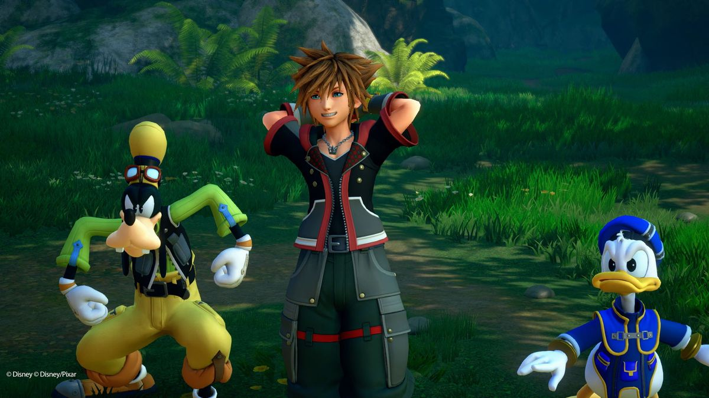

My Review on Kingdom Hearts
Kingdom Hearts 3 is a game that almost feels impossible to describe. It’s a finale to a complex narrative that’s been built up for over 15 years and, somehow, manages to be a satisfying end to so many disparate plot threads. It’s an astounding ode to Disney classics, that does probably the best job a video game has ever done at emulating these classics.
Square Enix has done a stunning job of recreating these Disney worlds, down to the exact details. Like the plastic-y noise everything makes in the Toy Story world, or the seamless recreation of “Let It Go” in Frozen, or the slightly unnerving way Mike’s single eye moves in Monster Inc.
At its core, Kingdom Hearts 3’s combat system is the same as past games, giving you a mix of ground combos, aerial combos, magic, and summons to use. The big change this time, however, is Keyblade Formchanges, letting Sora transform his weapon into an entirely new one.

Rated: 100/100
The developer has refined and perfected the combat. It kept its silliness in tact. It kept in the darker themes and deep moments of self-reflection that we all need every once in awhile. It’s, quite frankly, the best Kingdom Hearts game Square Enix has ever created.
Rated: 90/100
Kingdom Hearts III is exactly the sequel it should be. Despite the absurdly long production time, it manages to hit all the right notes and feel like a satisfying and enjoyable conclusion to Square Enix's most confusing story. It's charming, it's funny, it's emotional, and it's a boatload of fun to play.
Rated: 95/100
While not perfect, Kingdom Hearts III is the game I’ve been waiting for. After finishing it, I was delighted by how satisfied I was with the journey. I traversed worlds with some of my favorite Disney characters, persevered through challenging boss battles, and saw a triumphant finale that only makes me more excited for the future.
Rated: 80/100
Kingdom Hearts III is an amazing yet flawed game made for the most die-hard fans of the series. While newcomers can still enjoy the quick-paced gameplay, the extremely complicated story will surely leave them bewildered. Even if you understand so little of it, prepare to embrace the wacky and bizarre nature of Kingdom Hearts III with an open-mind and it will be a fun ride.
Rated: 60/100
Perhaps it was inevitable that after such a long time, the conclusion to this story would ring slightly hollow, even rather facile, after all the prior build-up. I’ve been through 13 years of life, but it turns out that Sora got to skip all of that. Kingdom Hearts III plays it extremely safe, ultimately banking on nostalgia and delivering more of the same.